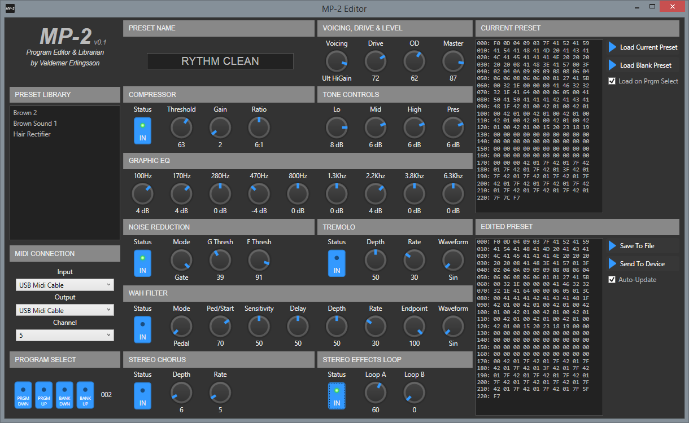
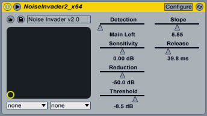
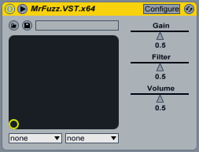

IR Workshop
IR Workshop - Windows application to create, mix and edit convolution impulse responses

CloudSeed Algorithmic Reverb

CloudSeed is an algorithmic reverb plugin built in C# and C++ for emulating huge, endless spaces and modulating echoes, in the spirit of classic studio reverb units like the Lexicon 224.
MP-2 Editor
A GUI editor for the classic ADA MP-2 guitar pre-amplifier

Noise Invader - Noise Gate and Expander
A simple but extremely good expander noise gate.

RXG-100 VST Plugin
RXG-100 is an emulation of the pre-amplifier section of a Randall RG-100 amplifier.

Rodent.V2 VST Plugin
Rodent is an emulation of the classic ProCo Rat distortion pedal. It includes several of the most common aftermarket mods that can be enabled or disabled.

SmashMaster VST Plugin
SmashMaster is an emulation of the Marshall Shred Master distortion pedal

Mr. Fuzz VST Plugin
Mr Fuzz is an emulation of the MFZ Maestro Fuzz (op-amp based fuzz pedal)
